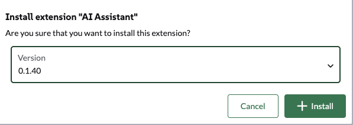

Quick start
This quick start explains how to use Ollama to provide LLM capabilities to Liz. You can switch providers after the initial installation by referring to How-tos for Admin.
Prerequisites
The current version of the AI Assistant requires the following components:
-
Rancher Prime/Community Manager 2.13 or above
Make sure you have the rights to deploy CRD (cluster_admin) on the host cluster.
Technical Requirements
Here is a table of the supported AI components and their requirements.
|
You only need to meet the requirements for the specific components you intend to run. Requirements will vary based on the specific large language model (LLM) you choose to deploy. |
| LLM Model | Requirements | GPU Requirement |
|---|---|---|
Ollama installed |
NVIDIA RTX A5000, NVIDIA RTX 4090 or similar (Minimum 24Gb VRAM) |
|
Ollama installed |
NVIDIA A100 or similar (Minimum 80Gb VRAM) |
|
Gemini |
Google Workplace Account |
N/A |
ChatGPT |
OpenAI account |
N/A |
AWS Bedrock |
AWS account |
N/A |
OpenAI Like provider |
Azure Account, Evroc Think, … |
N/A |
|
The list of tested models is available in the Models documentation. |
|
If you run your own Ollama, please make sure to have at least |
Install Liz: The Rancher AI Assistant
Installation of Liz is a two step process:
-
Deploy the agent and the MCP via the provided Helm chart.
-
Deploy the Rancher UI extension.
Install the Agent and the MCP on the local cluster
-
Create a
values.yamlfile setting (for Ollama):ollamaLlmModel: "gpt-oss:20b" ollamaUrl: "http://ollama:11434" activeLlm: "ollama"You can change later those settings and providers in Rancher’s “Global Settings → AI Assistant tabs”
-
Install the rancher-ai-agent chart
helm install rancher-ai-agent \ --namespace cattle-ai-agent-system \ --create-namespace \ -f values.yaml oci://registry.suse.com/rancher/charts/rancher-ai-agent
Install the UI extension
Open the Rancher Manager UI and navigate to the 'Extensions' page.
-
On Rancher Manager, click on Extension in the menu bar.

-
Use the three-dot menu in the upper right and select 'Add Rancher Repositories'.

-
Select 'Add Official Rancher Extensions Repository' to add the repository.

-
Click 'Add'.
-
Find the AI Assistant card and click 'Install'.
-
Select a version (or use the latest by default) and click 'Install'.

-
Once the extension has finished installing, click the 'Reload' button that appears at the top of the page.